Rootbound dossier · Lantern forage and fungus
A fallen, gently bent log with six planted violet mushrooms, broad exposed wood and clustered moss. This is a constituent study for Lantern Grove.
Retained manual R4: 6.3/10, retained improvement; still held for art/game admission. Color and broken ends improved over R3's 5.7, but the body still looks manufactured. Stop repeating this construction method. No replacement has been admitted to the game.
Latest R5: TRELLIS produced an actual raw geometry master. See the neutral model inspection. It has useful irregular wood forms but visible fragmentation; independent review holds production, and the topology audit confirms open/nonmanifold geometry.
Latest R6: one reconstruction and matched diagnostic closes open surfaces but loses important log volume. Retained as evidence; sixth attempt closes HOLD.
Owner review: these images contain useful scenery components. Next direction is a reusable log, mushroom and moss kit: varied arrangements, one harvestable, and parts yielding their own materials as damage breaks them away. The prior one-component gate applied to the R6 reconstruction recipe; an intentionally modular kit can contain multiple well-authored parts. R6's unplanned fragments are not automatically usable kit pieces.
Jump to the latest actual wood repair
Independent reference selection · V1 prompt/source · V2 prompt/source
| Attempt | Decoded faces | Outcome |
|---|---|---|
| R1 · V1 input | 6,755,672 | Stopped by the 750,000-face guard; no export. |
| R2 · V2 input | 2,218,798 | Same guard; no export. |
Both used the existing 512/12-step/seed-1234 full-export profile. The export target does not limit decoder size. The difference is one paired observation, not a general claim about reference complexity. No guard was relaxed.
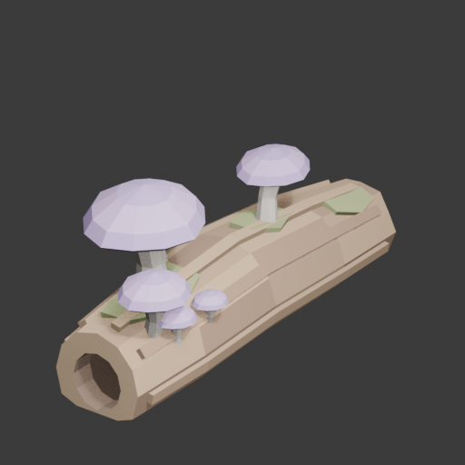
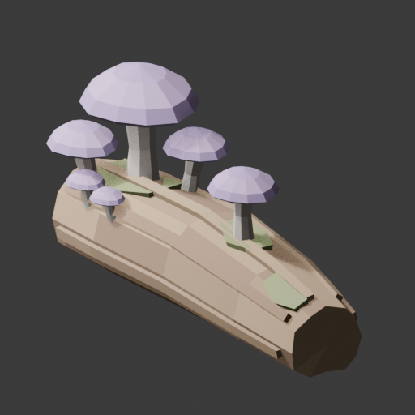
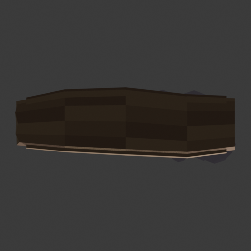
One Blender 4.5.3 build produced 22 individually closed components and 1,452 triangles, with an actual complete envelope of 1.622 × 0.561 × 0.825m (X/Y/Z, Z-up). Final triangle audits report consistent shared-edge direction, positive component volumes and no degenerates. Six local stem/log and stem/cap contact checks pass; those measurements do not establish every visible attachment or global intersection.
Independent visual review · Execution receipt · Actual mesh audit · Seven-camera framing · Actual 96px · Actual 48px
A separate builder implements the reviewed section-loft plan: closed bent wood, a shallow recessed end, broad bark strips and six distinct closed stems/caps. Actual geometry, all-angle renders and small-image legibility must decide its value.
Measured plan · Independent plan review · Builder and execution status
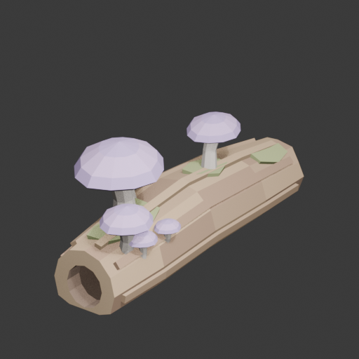
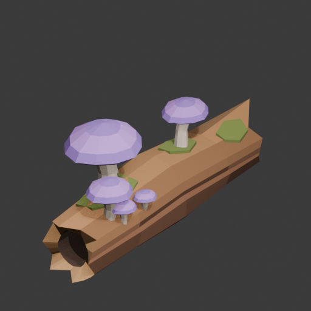
The separate repair executed once and saved 42 matching renders. It removes six raised bark strips, keeps all six mushrooms, and refits three moss patches to the actual new surface. R4 has 16 components / 1,390 triangles; 27 grounded log triangles cover 0.355m². Final topology and six local contact gates pass. The editable source preserves both candidates for comparison.
Independent R4 review: 6.3/10. Retain the improved color and end detail, but the continuous long planes and blade-like far tip still miss the fuller organic target. The next method should change the broad wood mass. A raw TRELLIS geometry proposal led to the separately reviewed R5 raw-geometry run below.
R4 execution receipt · R4 actual geometry audit · Measured repair plan · R4 at 96px · R4 at 48px
The same selected V2 reference completed a fresh 512/12-step/seed-1234 run. Its dedicated input-pinned raw-PLY profile produced 1,077,634 vertices / 2,218,798 triangles (41,776,379 bytes), preserving the existing full-export and tree-profile limits. This is untextured source geometry, not a finished game asset.
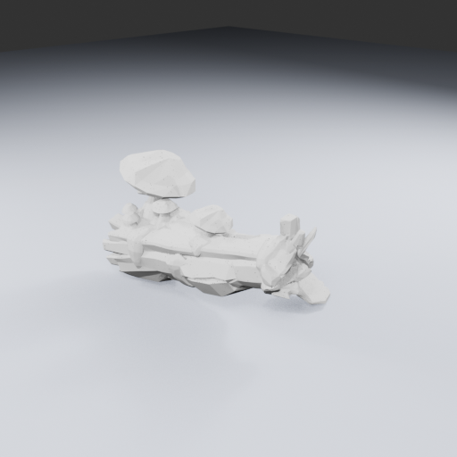
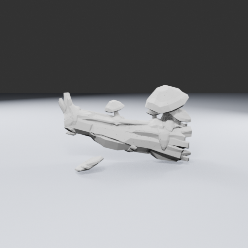
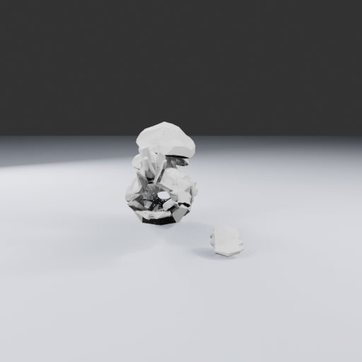
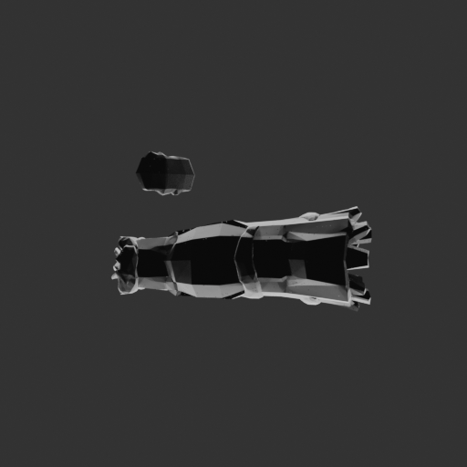
Blender 4.5.3 verified exact float32 positions, triangle indices/order and counts, then saved 21 actual views and an editable inspection scene. The raw PLY was not changed, normalized, welded, textured or simplified. The scene contains presentation lights and a floor, not collision or gameplay data.
Independent raw review: 4.4/10, retain source and HOLD. This untextured raw score is not a like-for-like ranking against colored R4: retain both useful studies. Detached pieces and poor small-size readability prevent direct adoption. The read-only topology audit finds 67,425 boundary edges and 99,060 nonmanifold edges, plus detached components. Island removal alone is insufficient: review a measured repair plan before a derivative.
Generation receipt · Exact Blender inspection · Runner review · Inspector review · 96px · 48px
Future separately harvested wood/fungus parts should regrow on long timers, with nearby qualifying structures suppressing regrowth. Those systems and player-view placement remain separate implementation work.
One independently planned and reviewed voxel reconstruction produced 124,172 triangles. Its edge/area/winding checks pass, but 240 surface components violate the planned single-component gate. The builder stopped and saved the held result. A separate read-only diagnostic produced these matching actual renders without changing either model.
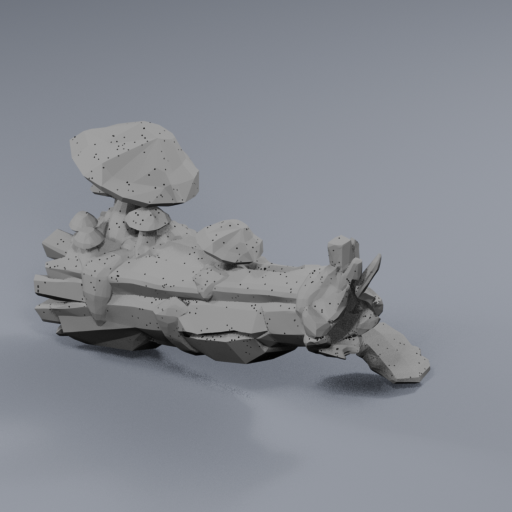
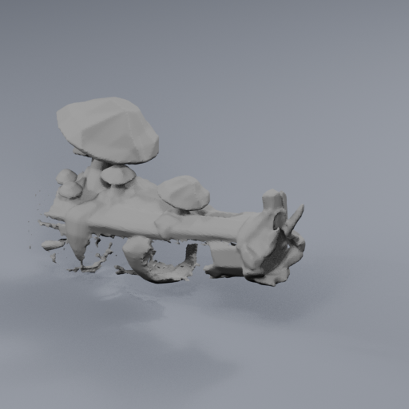
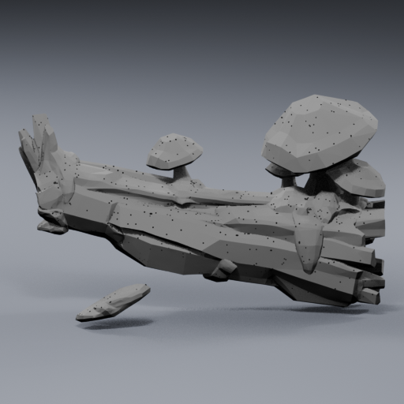
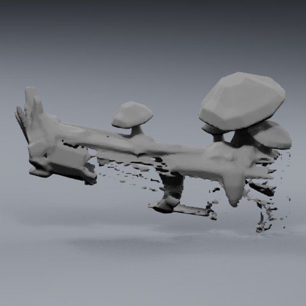
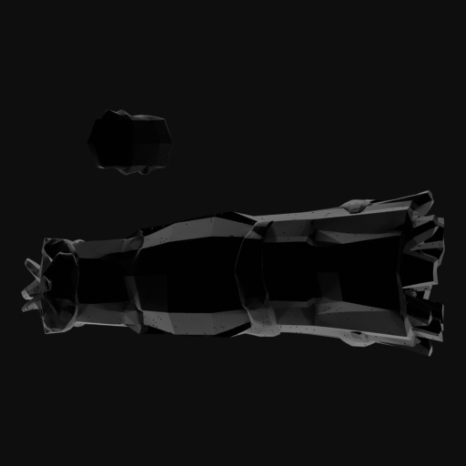
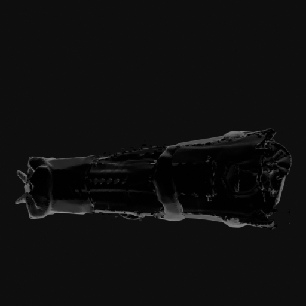
The lower log loses substantial mass, and small detached-looking fragments remain. All 240 measured surface components have positive signed volume; cavity nesting and self-intersections were not tested. Retain the topology gain and both sources without treating this derivative as a finished asset. No seventh Lantern repair in this visit.
Independent terminal visual review · Study and limits · Actual topology · Unchanged-model proof · 96px · 48px
{kind=link}
{kind=link}
{kind=link}
{kind=link}
{kind=link}
{kind=link}
{kind=link}
{kind=link}